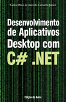

Carlos Camacho
|
|
|
• Analista de Tecnologia da Informação
Banco do Brasil S/A
De Janeiro de 2010 – o momento
São Paulo e Região, Brasil
São Paulo e Região, Brasil
• Analista de Tecnologia da Informação
Banco Nossa Caixa S/A
De Janeiro de 2006 – Dezembro de 2009 • 4 anos
São Paulo e Região, Brasil
São Paulo e Região, Brasil
- Atuando diariamente com o Sistema de Pagamentos Brasileiro SPB.
- Utilização de algoritmos de criptografia para compliance com auditoria de Segurança da Informação (ISO 27002 - Seção 12).
- Migração de sistemas utilizando base de dados IBM DB2 UDB para base Microsoft SQL Server.
- Ferramentas: Microsoft C# .NET e Visual Basic .NET, Microsoft SQL Server, Microsoft Windows Server, OOP, Cobol CICS, Natural, DB2.
- Utilização de algoritmos de criptografia para compliance com auditoria de Segurança da Informação (ISO 27002 - Seção 12).
- Migração de sistemas utilizando base de dados IBM DB2 UDB para base Microsoft SQL Server.
- Ferramentas: Microsoft C# .NET e Visual Basic .NET, Microsoft SQL Server, Microsoft Windows Server, OOP, Cobol CICS, Natural, DB2.
• Programador Sênior
Level Up Brasil
De Fevereiro de 2005 – Dezembro de 2005 • 11 meses
São Paulo e Região, Brasil
São Paulo e Região, Brasil
- Consultor Certificado Microsoft convidado para participar da implantação da multinacional Level Up Interactive no Brasil, empresa associada à TecToy, trazendo uma nova e promissora tecnologia em jogos on-line via internet chamada MMORPG (Massively Multi-player On-line RPG), onde milhares de jogadores estão ao mesmo tempo em um mesmo jogo.
- Responsável pelo desenvolvimento do sistema e-Commerce, ferramenta Web que inaugurou a fase de cobrança do jogo Ragnarok no Brasil.
- Geração de relatório de vendas para a diretoria, mantendo contato (conversação e escrita em inglês) com a equipe nas Filipinas e Índia.
- Ferramentas: Microsoft C# .NET, Microsoft SQL Server, Microsoft Windows Server, OOP, Stored Procedures, Testes Integrados, Continuous Delivery.
- Responsável pelo desenvolvimento do sistema e-Commerce, ferramenta Web que inaugurou a fase de cobrança do jogo Ragnarok no Brasil.
- Geração de relatório de vendas para a diretoria, mantendo contato (conversação e escrita em inglês) com a equipe nas Filipinas e Índia.
- Ferramentas: Microsoft C# .NET, Microsoft SQL Server, Microsoft Windows Server, OOP, Stored Procedures, Testes Integrados, Continuous Delivery.
• Programador Sênior
Expertise Tecnologia de Informação e de Processos
De Julho de 2004 – Janeiro de 2005 • 7 meses
São Paulo e Região, Brasil
São Paulo e Região, Brasil
- Consultor Certificado Microsoft.
- Projeto pontual para o Banco Nossa Caixa S/A. Com demanda do departamento de RH, levantamos requisitos e desenvolvemos sistema que armazena habilidades e competências dos colaboradores. Ao armazenar em banco de dados o perfil exigido pelos cargos da Instituição, o gestor possuía em mãos uma ferramenta que indicava cursos necessários para que seus funcionários atinjam os conhecimentos demandados para seu cargo atual.
- Os relatórios indicavam ainda funcionários que possuíam mais competências dos que as exigidas pela sua posição, indicando a possibilidade de uma promoção.
- Ferramentas: Microsoft C# .NET, Microsoft SQL Server, Microsoft Windows Server, OOP.
- Projeto pontual para o Banco Nossa Caixa S/A. Com demanda do departamento de RH, levantamos requisitos e desenvolvemos sistema que armazena habilidades e competências dos colaboradores. Ao armazenar em banco de dados o perfil exigido pelos cargos da Instituição, o gestor possuía em mãos uma ferramenta que indicava cursos necessários para que seus funcionários atinjam os conhecimentos demandados para seu cargo atual.
- Os relatórios indicavam ainda funcionários que possuíam mais competências dos que as exigidas pela sua posição, indicando a possibilidade de uma promoção.
- Ferramentas: Microsoft C# .NET, Microsoft SQL Server, Microsoft Windows Server, OOP.
• Programador Sênior
InfoSERVER
De Janeiro de 2004 – Junho de 2004 • 6 meses
São Paulo e Região, Brasil
São Paulo e Região, Brasil
- Consultor Certificado Microsoft.
- Projeto estratégico para o Banco Bradesco S/A. Migração de serviços da Intranet de tecnologia open source (Linux, Apache, MySql, PHP, LDAP) para tecnologia Microsoft (Windows Server, ASP, Visual Basic, SQL Server, Active Directory).
- Projeto estratégico para o Banco Bradesco S/A. Migração de serviços da Intranet de tecnologia open source (Linux, Apache, MySql, PHP, LDAP) para tecnologia Microsoft (Windows Server, ASP, Visual Basic, SQL Server, Active Directory).
• Programador Pleno
Catho
De Janeiro de 2002 – Dezembro de 2003 • 2 anos
São Paulo e Região, Brasil
São Paulo e Região, Brasil
- Atuação na Equipe de Cobrança.
- Melhoria de processos de cobrança. Desenvolvimento de produtos internos usando LAMP (Linux, Apache, MySql, PHP).
- Melhoria de processos de cobrança. Desenvolvimento de produtos internos usando LAMP (Linux, Apache, MySql, PHP).
• Programador Júnior
Intercode
De Janeiro de 2001 – Dezembro de 2001 • 1 ano
São Paulo e Região, Brasil
São Paulo e Região, Brasil
- Atualização e desenvolvimento de websites.
- ASP, PHP, Oracle database, Flash actionscript.
- ASP, PHP, Oracle database, Flash actionscript.
• Auxiliar de Programador
Universidade Paulista
De Janeiro de 1997 – Dezembro de 2000 • 4 anos
São Paulo e Região, Brasil
São Paulo e Região, Brasil
- Atuação na Pró-Reitoria de Graduação e na Pró-Reitoria de Planejamento, Administração e Finanças.
- Manutenção de ementas e conteúdos programáticos de todos os cursos da Instituição. Aluno bolsista do Curso de Ciência da Computação.
- Manutenção de ementas e conteúdos programáticos de todos os cursos da Instituição. Aluno bolsista do Curso de Ciência da Computação.
• Pontifícia Universidade Católica de São Paulo
Mestrado, Ciência da Computação
Dissertação: A formação de profissionais em tecnologia da informação na área de desenvolvimento de software .
2008-2011
• Faculdades Oswaldo Cruz
Licenciatura Plena, Matemática
Licenciatura Plena, Matemática
2004-2005
• Universidade Paulista
Especialização, Análise e Projeto de Sistemas
Especialização, Análise e Projeto de Sistemas
2002-2002
• Universidade Paulista
Bacharelado, Ciência da Computação
Bacharelado, Ciência da Computação
1997-2000
• Livros publicados
|
Editora: Visual Books ISBN: 9788575022429 Páginas: 202 Edição: 2008 Esta obra utiliza o conceito de desenvolvimento em camadas de forma totalmente prática. Através da criação de uma aplicação para MS-Windows (Winforms), o leitor conhecerá o desenvolvimento da Camada de Acesso a Dados ou DAL (Data Access Layer), da Camada de Regras de Negócio ou BLL (Business Logic Layer) e da Camada de Apresentação ou UI (User Interface). O leitor aprenderá: - O processo de criação de banco de dados por meio de tabelas e procedimentos armazenados (stored procedures); - A criação de classes para gerenciamento de banco de dados usando stored procedures; - Como administrar transações no banco de dados via programação; - A implementação de classes que visam contemplar as regras de negócio; - A criação de formulários Windows e uma página Web com opções de inserção, alteração, exclusão e visualização de dados; - Como criar e utilizar um algoritmo de criptografia para tornar a aplicação mais segura; - Como o CLR (Common Language Runtime) permite a compatibilidade entre diferentes linguagens de programação. O livro é indicado para uso em laboratórios de informática e para o meio acadêmico, pois possui uma linguagem simples e fácil. É indicado para analistas e programadores que desejem iniciar ou aperfeiçoar seus conhecimentos em desenvolvimento de sistemas com a linguagem C# .Net. Pode ser utilizado como material de apoio para cursos de graduação, pós-graduação ou extensão. |
|  |
Editora: Edição do Autor ISBN: 9788591287703 Páginas: 339 Edição: 2011 Esta obra permite praticar e desenvolver um aplicativo Desktop completo em .Net. É um guia passo a passo no qual o leitor aprenderá: - A criação de um aplicativo Windows Form usando o Microsoft Visual Studio 2010 Premium (ou Microsoft Visual C# 2010 Express) - Como usar uma base de dados Microsoft Access 2007 como sistema de armazenamento do seu aplicativo - Proteção de dados no Microsoft Access 2007 - Autenticação de usuários de uma rede Microsoft Windows - Autorização de usuários implementando uma Lista de Controle de Acessos - Uso de componentes e a programação .Net necessária para permitir a inclusão, alteração, consulta e exclusão de registros - Introdução a refatoração de código; - Geração de relatórios dinâmicos usando o Microsoft Excel 2007 O livro é recomendado para programadores que desejem iniciar ou aperfeiçoar conhecimentos em desenvolvimento de sistemas com a linguagem C# .Net. |